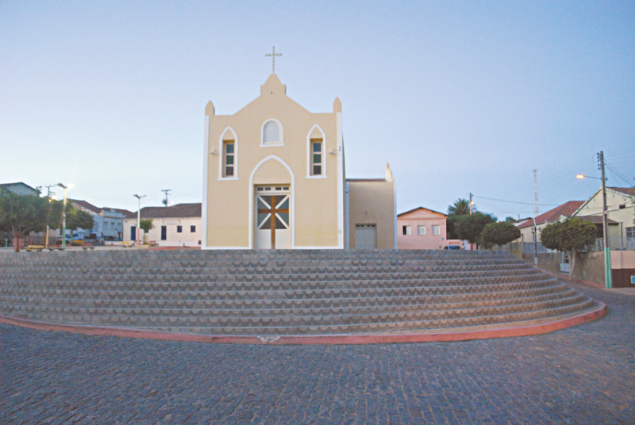

Geoinfos
Informações técnicas sobre relevo, população, IDH etc.
| INFORMAÇÕES | |
|---|---|
| Municípios limítrofes | Norte: Mombaça, Tauá Leste: Catarina, Sul: Aiuaba, Oeste: Parambu |
| Fundação | 21 de novembro de 1864 (156 anos) |
| Área total | 1.068,437 km² |
| Clima | Tropical quente semiárido |
| IDH | 0,618 |
| PIB | R$ 6.907,11 |
| INFORMAÇÕES TERRITORIAIS | |
|---|---|
| Número de habitantes | 7 844 habitantes |
| Superfície de Arneiroz |
106 843,7 hectares
1.068,437 km² |
| Densidade populacional | 7,17 ha./km² |
| Altitude de Arneiroz | 337,94 metros de altitude |
| Coordenadas geográficas decimais |
Latitude:
-6.31858
Longitude: -40.1622 |
| Coordenadas geográficas sexagesimais | Latitude: 6° 19′ 7″ Sul , Longitude: 40° 9′ 44″ Oeste |
| INFORMAÇÕES DO MUNICÍPIO | |
|---|---|
| Endereço da Prefeitura Municipal de Arneiroz |
Arneiroz
Prefeitura de Arneiroz
Rua José de Alencar, 4 ARNEIROZ - CE, 63670-000 Brasil |
| Telefone da prefeitura |
(88) 3419-1065
Internacional: +55 88 3419-1065 |
| Fax |
(88) 3419-1020
+55 88 3419-1020 |
| Endereço electrónicoda prefeitura |
Indisponível
|
| Site oficial do município | arneiroz.ce.gov.br |
| INFORMAÇÕES DO ADMINISTRATIVAS | ||
|---|---|---|
| Prefeito de Arneiroz | ANTÔNIO MONTEIRO PEDROSA FILHO | |
| Partido politico | MDB | |
| INFORMAÇÕES DE TRANSPORTE | |
|---|---|
| Transporte urbano disponível | - |
| Aeroporto |
Aeroporto Regional do Cariri
140.6 km
Aeroporto de Picos
171.9 km
Aeroporto de Sobral
294.2 km
|
| INFORMAÇÕES DE DISTÂNCIA A OUTRAS CIDADES | ||
|---|---|---|
| São Paulo : 2040 km | Rio de Janeiro : 1875 km | Brasília : 1352 km |
| Salvador : 762 km | Curitiba : 2338 km | Belo Horizonte : 1557 km |
| Manaus : 2232 km | Fortaleza : 283341 km mais perto | Recife : 614 km |
| Goiânia : 1520 km | Belém : 1073 km | Porto Alegre : 2883 km |
| Guarulhos : 2018 km | Campinas : 1989 km | São Luís : 624 km |
| Distância calculada em linha reta! | ||
Fonte: Wikipedia e Cidade Brasil
História
Conheça mais sobre a história de Arneiroz.
Arneiroz recebeu este nome de uma antiga freguesia de Portugal, no Conselho de Lamego, distrito de Viseu, Províncias de Traz-os-Montes e Alto Douro.
Os primeiros colonizadores das terras do Arneiroz foram os irmãos Francisco Alves Feitosa e Lourenço Alves Feitosa que se estabeleceram a margem direita do rio Jucá e ali fundaram a primeira fazenda de gado do “Alto Sertão dos Inhamuns”, por volta do ano de 1707.
No início do século XVIII formou-se no sertão dos Inhamuns um agrupamento de índios da tribo Jucá, missionada pelo Padre José Bezerra da Costa, primeiro Cura dos Índios do “Lugar de Arneiroz”, porém, com resultados de tal maneira funestos, que se viu, mais tarde obrigados a fazer a transferência de parte dos índios para Baturité e Crato. E depois, também, para a Vila Arroches, atual Parangaba, em Fortaleza, onde havia outras missões.
Apesar da expulsão dos índios o aldeamento não se desfez totalmente e nele passaram a dominar elementos da família Feitosa que se tornaram senhores absolutos da região.
A origem do topônimo Arneiroz, segundo Florival Serraine é o plural do diminuitivo medieval Arneiroz (corruptela de arenaríola), palavra fora de uso em Portugal. Segundo alguns léxicos a palavra Arneiroz é um vocábulo que significa terreno arenoso e estéril. Gentílico: arneirozense.
Pontos Turísticos
Saiba mais sobre os melhores lugares e o que fazer em Arneiroz.
A Paróquia Nossa Senhora da Paz nasceu com a Congregação dos Missionários Escalabrinianos. Desde a metade do século XIX, missionários italianos fundavam igrejas no Brasil para apoiar os imigrantes de mesma nacionalidade.
 Capela do Santo Antonio

Como Chegar?
Veja como chegar nos melhores pontos de Arneiroz